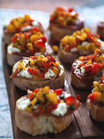

Bruschetta aux poivrons grillés, chèvre & prosciutto
Ingrédients :
- •1 pain baguette ciabatta
- •7 oz de fromage de chèvre des neiges
- •5 tranches de prosciutto
Pour 15 bouchées
- •1 c. à soupe d'huile végétale
- •1 poivron jaune
- •1 poivron rouge
- •2 c. à soupe d'origan frais, haché
- •Sel et poivre, au goût
Pour les poivrons grillés
Étapes
- •Frotter les poivrons d'huile végétale puis les déposer sur une plaque allant au four.
- •Régler le four à « grill » et cuire pendant 5 minutes de chaque côté (4) pour un total de 20 minutes.
- •Déposer les poivrons dans un bol, couvrir de papier cellophane puis laisser refroidir à la température de la pièce.
- •Lorsqu'ils sont manipulables, retirer la peau puis couper en cubes.
- •Dans un bol, combiner les poivrons et les herbes fraîches puis assaisonner généreusement de sel et de poivre.
- •Préchauffer le four à 375 °F puis couper 15 croûtons de pain d'environ 1½ cm d'épaisseur.
- •Garnir chaque croûton d'un peu de prosciutto, d'un morceau de fromage de chèvre et du mélange de poivrons. Enfourner pendant 15 minutes puis déguster.